This page provides a comprehensive guide for setting up the news-sentiment-ai-trader codebase. It covers the installation of system requirements, environment configuration, and the initial execution of the trading system using the integrated CLI.
The system relies on a modern JavaScript runtime and specific AI/search providers.
| Requirement | Version | Purpose |
|---|---|---|
| Node.js | ≥15.0.0 | Core runtime for backtest-kit and ccxt. |
| TypeScript | ^5.0.0 | Static typing and compilation. |
| Ollama | ≥0.6.3 | Local LLM server for sentiment inference. |
| Tavily API | - | Web search for real-time news retrieval. |
The project uses npm to manage its dependencies, which include the backtest-kit framework and the agent-swarm-kit for LLM orchestration.
git clone https://gitlab.com/tpetrtadi-group/news-sentiment-ai-trader.git
cd news-sentiment-ai-trader
npm install
The core logic depends on several specialized packages defined in the manifest:
@backtest-kit/cli: Provides the command-line interface.agent-swarm-kit: Manages the multi-agent LLM forecasting logic.ollama: Interface for the local LLM.ccxt: Handles exchange connectivity for market data.The system requires two primary API tokens to function. Copy the example environment file and populate it with your credentials:
cp .env.example .env
Required Variables:
OLLAMA_TOKEN: Token for authenticating with your Ollama instance (if required by your setup).TAVILY_TOKEN: API key from Tavily for news search capabilities.The project is configured to use ESNext modules with path mapping for the logic/ and utils/ directories to simplify imports.
The following diagram illustrates the transition from environment configuration to the internal code entities that manage the system startup.
"The diagram below bridges the environment variables and configuration files to the internal backtest-kit initialization sequence."

The system is started via the @backtest-kit/cli package, which is mapped to the start script in package.json.
npm start
When the system starts, it performs several critical steps via the backtest-kit framework:
setLogger to output operational data.CC_PERCENT_FEE and CC_SCHEDULE_AWAIT_MINUTES are applied to the GLOBAL_CONFIG.di-kit and di-scoped, managing the lifecycle of news fetchers, LLM clients, and backtesting engines."This diagram maps the system's runtime components to their respective code modules during a typical execution cycle."

To ensure the environment is correctly configured, you can verify the framework initialization with a minimal script:
import { getDefaultConfig, setLogger } from 'backtest-kit';
// Verify Logger
setLogger({
log: (topic, ...args) => console.log(topic, args),
debug: () => {},
info: () => {},
warn: () => {},
});
// Verify Configuration
const config = getDefaultConfig();
console.log('Parameters loaded:', Object.keys(config).length);
Expected Result: The console should indicate that 14 default parameters have been loaded.